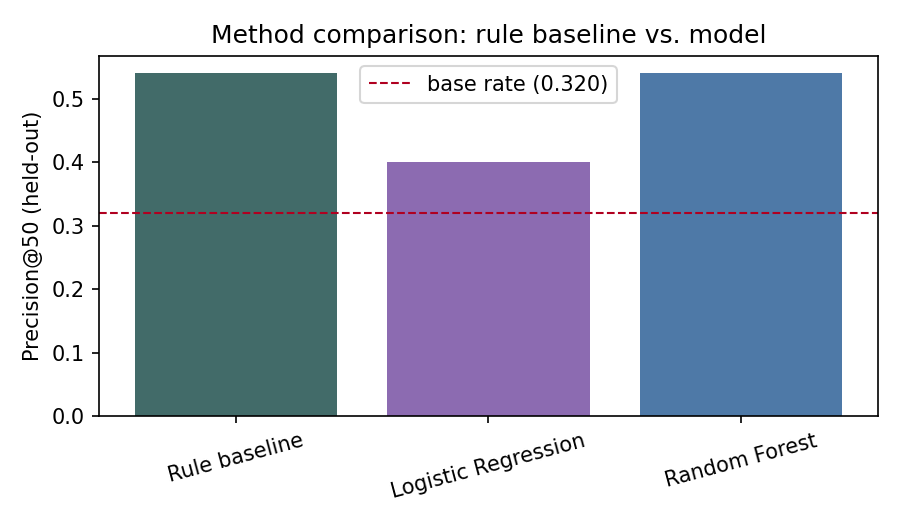
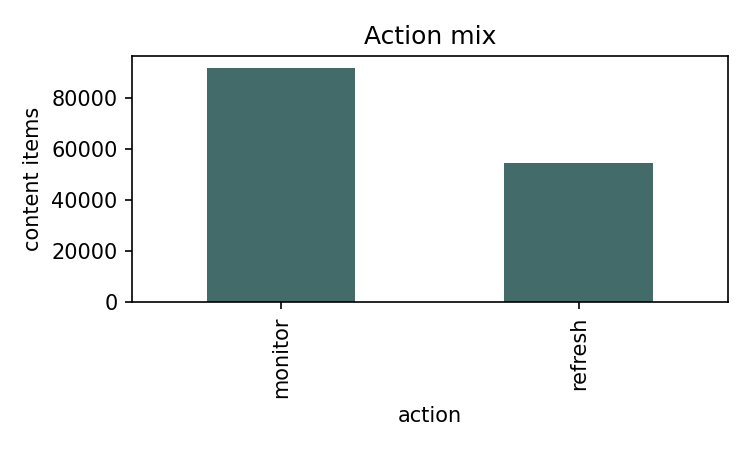
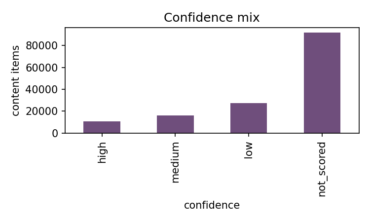

Abstract
Which of a content portfolio's pages should an editorial team review first — for refresh, expansion, protection, pruning, or monitoring? This is the real problem behind FlyRank's own Refresh / Content Opportunity Scoring lane, not a synthetic exercise. This study uses a 30-day monthly slice of FlyRank's ~79-million-row search-performance warehouse — 146,253 scored content items across 42 anonymized clients, March 2026. A transparent rule-based baseline was built and compared against two supervised classifiers — logistic regression and random forest — under a client-grouped holdout split designed so a model can't simply memorize one client's traffic patterns. The transparent baseline ranked its top 50 highest-priority pages with 1.69× the precision of random selection (54% vs. a 32% held-out base rate) and has not been beaten by either model across three independent runs. The resulting ranked queue — with machine-readable reason codes and confidence tiers — is offered as a decision-support tool for a human reviewer, not an autonomous recommendation system.
The problem: too many pages, one editorial team
A content team managing tens of thousands of pages across dozens of clients cannot manually audit every page every cycle. Some pages are quietly losing traffic. Some are already strong and just need protecting. Most are neither — they need nothing this cycle. The question this paper answers is narrow and practical: of everything in the portfolio, which ~50 pages should a reviewer look at first?
This is not a synthetic classroom exercise — it's the real problem behind FlyRank's own Refresh / Content Opportunity Scoring lane. Every page, client, and click in this study comes from FlyRank's production search-performance warehouse, anonymized before this analysis ever touched it; the editorial team described above is the actual kind of team FlyRank's own tooling is built to support. The case study is this paper — the question, the data, and the queue below all trace back to that one real constraint: too many pages, one team, one review cycle.
This is a ranking problem, not a prediction problem in the abstract sense. The output that matters is not a probability with three decimal places — it's an ordered list a human works down from the top, and the honest question is whether that list front-loads the pages that actually need attention. That's why this paper's one defensible metric is Precision@50: of the top 50 pages the queue puts first, what fraction are truly declining? Ranking the other ~146,000 pages accurately doesn't matter if nobody will ever reach them in one review cycle.
A 30-day slice of a 79-million-row warehouse
This study uses FlyRank/internship-warehouse, a gated Hugging Face dataset:
approximately 79 million rows across 5 tables, 104 anonymized clients, spanning
2025-01-27 to 2026-06-30. The warehouse is never downloaded —
every number in this paper comes from DuckDB queries run directly against the hosted
Parquet files. Two tables were used: fact_content_daily_performance (the
daily Google Search Console panel that the features and label are built from) and
dim_content (content metadata, and the staleness signal for the baseline
rule).
The development window is a single mid-panel month, March 2026, chosen so
a real 30-day "before" window (2026-01-30 to 2026-03-01) exists
on both sides. The final month in the panel (June 2026) is held sealed and was never
queried for this study — it exists for a future, truly out-of-time evaluation, not for
routine model comparison.
How the population narrows
Reported as three separate steps rather than one collapsed number, since each step means something different:
The last step keeps only items with at least some impressions in the prior-30-day window
(imp_prev30 > 0) — about 48% of the March-scoped population. Items with
zero prior visibility can't get a trustworthy click-through-rate reading, so they're
excluded from scoring rather than guessed at. This is a real choice, named here rather
than hidden.
What's excluded, and why
- Same-period impressions/clicks are never a feature. They determine the label itself — using them as an input would mean the model is reading the answer.
- Product or decision flags are never features. A score or flag an existing system already produced encodes someone else's decision; using it as an input just re-learns that decision, not the underlying world.
- Client and content IDs are for joining only. They're pseudonymized hashes, used exclusively to group rows and hold out clients — never passed to a model as a feature.
Public-safe by construction. No client names, domains, URLs, or raw search queries appear anywhere in this paper, its source notebooks, or its exported artifacts — only pseudonymized hashes and aggregate statistics.
Label, features, baseline, and how the split was made honest
Unit of analysis: one content item (a page) belonging to one client, scored independently of every other item.
Label: is_declining = (impressions_march < 0.8 ×
impressions_prev30) — impressions dropped more than 20% month-over-month, among
items with at least some prior visibility. This is a proxy for "needs review," not a
claim about why a page's ranking moved.
Features: five numeric 30-day aggregates
(imp_prev30, clk_prev30, avg_position_prev30,
ctr_prev30, active_days_prev30) plus four low-cardinality
categoricals discovered live on the content table (content_type,
competition_level, main_intent, model_used),
one-hot encoded. Every feature is knowable strictly before the label window opens.
The baseline, in plain words first
A page is worth reviewing if it's visible, it's underperforming the click-through rate its position typically earns, and it's gone a while since its last update. Coded as a transparent score with no fitted weights:
score = ctr_gap × impressions_prev30 × staleness_multiplier
where ctr_gap is the shortfall between a page's own click-through rate and
what its position tier typically earns, and staleness_multiplier stays a
near-neutral 1× for most rows — the content table's "last updated" field turned out
to be a current-state snapshot, not frozen at the start of the study window, so most items
simply can't be scored for pre-window staleness. That limitation is named plainly in the
formula's design rather than hidden.
Validation design: client-grouped, not random
Pages from the same client share structure — template, niche, typical traffic tier — so a
random row-level split lets a model partly memorize "this client's pages behave like X"
instead of learning something that generalizes to a client it has never seen. Every split
in this study groups by client (GroupShuffleSplit, 70/30, fixed seed),
producing 29 training clients and 13 held-out test clients with zero overlap —
42 clients, 75,733 held-out rows, a 0.320 base rate. The study is not additionally
time-aware on top of that: the prev30/March window is this slice's only time dimension,
and a true chronological holdout is what the sealed June sample is reserved for.
Leakage checks
- The confession test. Re-adding the raw label-window impressions as a feature should collapse AUC toward a perfect score if the harness is working — and does: honest AUC 0.661 → with the leak, 1.000 → restored, 0.661.
- Timeline drawn explicitly. The feature window (Jan 30–Mar 1) and the label window (Mar 1–Apr 1) never overlap in any query.
- No product or decision flags appear anywhere in the feature list.
- The population filter is disclosed above, not left implicit.
- Every metric is reported next to its base rate, never alone.
- A naive random split was tested against the honest one. The same model, scored under a random 70/30 split instead of the client-grouped one, came back materially higher — client memorization inflating the number, not real skill. Every number in this paper is the honest, client-grouped one.
The rule baseline has not been beaten
All three rows below come from one split, one metric, computed together in the same run — the exact numbers a fresh re-run of this study produced.
| Method | Precision@50 | Lift over base rate | AUC |
|---|---|---|---|
| Rule baseline | 0.54 | 1.69× | 0.460 |
| Logistic Regression | 0.40 | 1.25× | 0.630 |
| Random Forest | 0.54 | 1.69× | 0.626 |

A transparent, hand-written rule matches the strongest fitted model tested. Across three
independent runs of this study, the random forest has ranged from about 0.44 to tying the
baseline outright at 0.54 — it has never strictly beaten it. Logistic regression trails
both, likely because its coefficients are dominated by rare one-hot category levels rather
than the numeric signal the random forest actually leans on
(avg_position_prev30, imp_prev30, active_days_prev30,
ctr_prev30 — all plausible, no single feature dominates).
A striking side detail: the rule baseline's AUC (0.460) is below random, while both fitted models sit around 0.63. The rule is a poor ranker of the whole 146K-item queue — but it's sharply tuned for exactly the top 50, which is the one metric this study defends. AUC and Precision@K measure different things, and the stable claim here is Precision@50, not AUC.
Where the baseline is wrong
In an earlier run's top-50 queue, 23 of 50 flagged pages were false positives — and every
one was a keyword article in a strong position (14 in the top-10 results, 9
in the top 3), each with 100K–177K prior-30-day impressions and a real click-through-rate
gap that simply didn't turn into a decline that month. That's a legible, specific failure
mode: a high-traffic page with a real CTR gap in a strong position reads as "declining" to
the rule, but sometimes it just isn't, that cycle.
What this study cannot claim
- Staleness is uninformative for most of the queue. The content table's "last updated" field is a current-state snapshot, not point-in-time — staleness is known for only about 20% of scored items. The rule's staleness term is a near-neutral multiplier for the rest, and a reviewer should not read "unknown" as "old."
- One client-grouped split, one month, validated. The 0.54 / 1.69× number comes from 13 held-out clients scored against the March 2026 slice. A new client onboarded since, or a different month, has not been checked and needs its own validation before this queue should be trusted for it.
- Validated only at k = 50. Ranking below roughly the 50th–100th position has not been checked against a held-out label with the same confidence.
- The rule's whole-queue AUC is below random (0.460). It is a legitimately narrow tool, sharply tuned for the top 50 — not a general-purpose ranker of the full portfolio.
- Observational, not causal. Nothing here claims that refreshing a page causes a recovery in traffic. The data is a cross-sectional snapshot, not an experiment, and no claim in this paper exceeds that.
- The random forest number moves across runs. Re-running the identical model and split across sessions has produced Precision@50 anywhere from about 0.44 to tying the baseline outright at 0.54. The stable claim is that it has never strictly beaten the baseline — not the third decimal place.
- The population filter is itself a choice. Only items with some prior visibility get scored at all; that choice is disclosed above, not hidden.
The action playbook
The rule baseline stays the primary ranker — the results above just re-confirmed it holds its own against the strongest fitted model, so nothing changes that choice. The random forest's probability rides along on every row as a secondary, clearly labeled corroboration signal — it is never used to re-rank the queue.
refreshmonitor

Reason codes a reviewer can act on
Every scored row carries up to three short codes instead of one flat flag:
large_ctr_gap / small_ctr_gap (is the click-through-rate shortfall
the loud kind or the marginal kind), a staleness state
(stale_180d_plus / recently_updated / update_date_unknown),
and model_agrees — appended only when the random forest's probability is also
above 0.5 on the same row, an honest corroboration flag, never a ranking input.
Before acting on a refresh row, a person checks
update_date_unknownrows: is this page actually stale, or just missing an update-date record? The queue can't tell the difference.recently_updatedrows still ranked high: a CTR gap on a page updated days ago may just need time to show up in search, not another rewrite.- Any page in the weakest position tiers: the expected click-through baseline there is already tiny, so a numerically real gap can still be practically small.
What this system should never do
- Publish, unpublish, or deprioritize a page directly from this queue's action label.
- Treat
refreshas a promise of recovery — it's a review priority, not a guarantee. - Re-rank by the model's probability instead of the rule's score — that would silently swap in the ranker this study found does not beat the baseline.
- Export anything beyond pseudonymized client and content IDs.
Everything here reruns from a public notebook
Every number in this paper comes from
work/notebooks/capstone.ipynb in the repository below, which rebuilds the
full pipeline — connection, feature vector, label, baseline, both models, the
client-grouped split, and every chart — in one run. random_state=42 is fixed
everywhere a seed applies.
To rerun: open the notebook in Colab (badge at the top of the file), paste a free Hugging Face read token when prompted, and run all cells top to bottom. No GPU is required; the warehouse is queried in place with DuckDB, never downloaded.
work/notebooks/capstone.ipynbthis paper's source notebookwork/notebooks/w06_baseline_score.ipynbbaseline rule + top-10 reviewwork/notebooks/w07_model.ipynbmodel comparison + error analysiswork/notebooks/w08_validation_audit.ipynbhonest-split audit + leakage checklistwork/notebooks/w09_action_playbook.ipynbranked queue + reason codes
Full repository: github.com/kuteesatendojeremiah/Tendojerry-Flyrank
Built on the FlyRank ML Internship dataset
This study is built on the FlyRank ML Internship dataset, an anonymized slice of real production search-performance data made available for this internship program. Full credit to FlyRank for the dataset, the internship structure, and the review that shaped this work.
All findings above are observational and decision-support in nature. Nothing in this paper claims to have modeled or predicted a search engine's ranking algorithm.